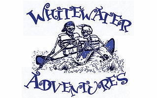

Overview
Purpose
This site identifies our company as the region's preeminent resource for white water rafting.
Audience
This site is for anyone interested in the thrill of white water rafting. It offers our current and future customers--from novices seeking expert guidance to experienced rafters with the highest and most discerning expectations--with details on our products and services.
Branding
Website Logo
Style Guide
Color Palette
Palette URL: https://coolors.co/282b5b-a4a6bf-f8f9fd-59285c-2c5c28
| Primary | Secondary | Tertiary | Accent 1 | Accent 2 |
|---|---|---|---|---|
| #282b5b | #a4a6bf | #f8f9fd | #59285c | #2c5c28 |
Typography
Heading Font: DynaPuff
Paragraph Font: Space Grotesk
Normal paragraph example
The best Whitewater Rafting in Colorado, White Water Rafting Company offers rafting on the Colorado and Roaring Fork Rivers in Glenwood Springs. Since 1974, we have been family owned and operated, rafting the Shoshone section of Glenwood Canyon and beyond.
Colored paragraph example
Trips vary from mild and great for families, to trips exclusively for physically fit and experienced rafters. No matter what type of river adventures you are seeking, White Water Rafting Company can make it happen for you.
Navigation
Site Map
Wireframes
Home